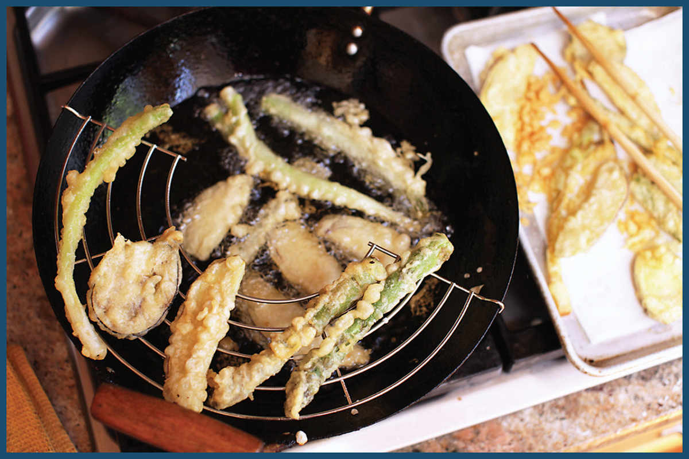

TEMPURA

Tempura is one of Japan’s oldest and most popular culinary traditions. Tempura-style batters were introduced to Japan by Portuguese missionaries in the sixteenth century. The word itself is a loan word from Portuguese.* Tempora referred to the period of time during which missionaries refrained from eating meat, instead eating fried seafood. In modern Japan, tempura ranges from inexpensive, everyday fare you can find at food courts and shopping malls to fancy, multicourse all-tempura meals prepared by a single tempura master. I remember having one such meal at Tsunahachi, a Tokyo tempura shop that has been serving tempura fried in sesame oil since 1923. The meal was superb, but it was made extra memorable when the live kuruma-ebi (Japanese tiger prawn) the chef presented before he was to dispatch and deep-fry it leapt off the plate and into my mother’s purse in a last-ditch escape attempt. (He was delicious.)
I am no tempura master, but as a cook at a sashimi restaurant, I’ve fried enough tempura in my time to pick up a few tips. All of the basic rules of deep frying I went over earlier in this chapter apply to tempura as well, but there are three especially important factors that can mean the difference between a light, airy, crisp coating and a soggy or thick coating:
•Do not overmix the batter. Once you add the liquid, your goal is to incorporate the liquid and batter as rapidly as possible, then stop stirring, as any extra stirring will encourage gluten development, robbing the batter of its light crispness. The best way I’ve found to mix tempura batter is to put the dry mixture in a wide bowl, add your liquid all at once, then stir rapidly with a pair of chopsticks in one hand, while vigorously shaking the bowl with the other. When finished, the batter should not have any watery liquid remaining, but it should still have plenty of bubbles and lumps.
•Use ice-cold soda water or a vodka/soda water mixture. Keeping the liquid cold inhibits gluten formation. Soda water adds bubbles to the mix, which will lighten the batter as it fries. Vodka will limit gluten development while also increasing the volatility of the batter, leading to faster frying and a lacier texture.
•Keep the food moving in the oil. Once the food goes into the fryer, do not let it sit still. Keep it moving by using a spider to continuously spin it, flip it, and splash it with fresh oil to encourage fast, even cooking.
*Japanese has several such Portuguese loan words, such as paraiso (paradise) and shabon (soap).